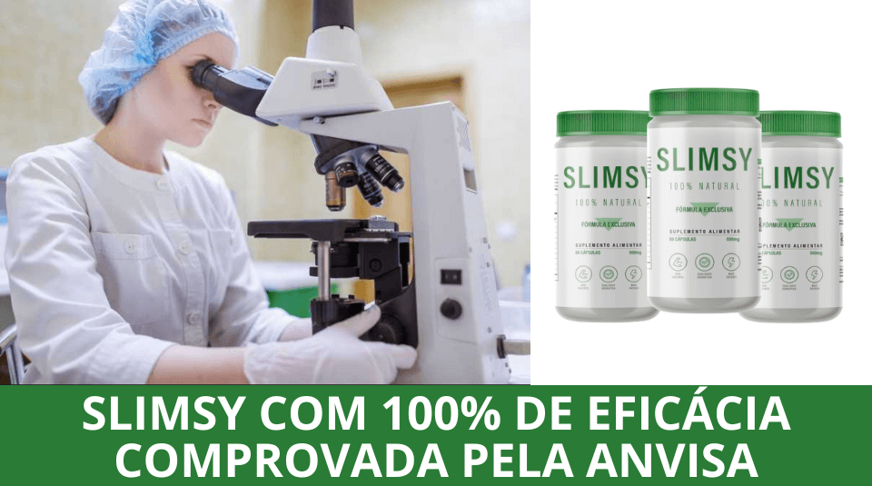

(18.245 Votos)

Carlos Mendes, mecânico de 38 anos, chegou a pesar 114,3 kg, mas nunca se preocupou muito com isso. Ele só percebeu que precisava mudar quando seu peso começou a afetar seu casamento. Agora, ele compartilha como deu a volta por cima:
"Minha batalha com a balança começou quando abri minha própria oficina, aos 19 anos. A rotina puxada, as longas horas de trabalho e a falta de tempo para me cuidar me fizeram ganhar muito peso. Fui entrando no efeito sanfona e, no começo, isso não me incomodava tanto.
Mas, com o tempo, a situação piorou. Já casado, continuei engordando e não conseguia voltar ao meu peso anterior. Minha esposa começou a notar e, de forma gentil, me incentivava a tentar emagrecer. No fundo, eu sabia que precisava mudar, mas não sabia por onde começar..."
Quando queremos emagrecer, buscamos soluções em todos os lugares – testamos dietas da internet, tentamos métodos milagrosos e, na maioria das vezes, só perdemos tempo e dinheiro.
E na correria da vida de mecânico, fica ainda mais difícil. Passo o dia inteiro na oficina, quase não tenho tempo para me alimentar direito, muito menos para praticar exercícios. Acabo comendo qualquer coisa rápida, e o peso só foi aumentando.
Mas como consegui emagrecer 39 kg em apenas 9 meses?
A resposta veio de onde eu menos esperava: meu irmão, que mora em Sydney, na Austrália. Ele me contou que lá muitas pessoas estavam emagrecendo sem sofrer com o temido efeito sanfona – e foi aí que decidi tentar!
Então resolvi pesquisar mais a fundo e comecei a me animar quando descobri que, depois de vários testes rigorosos, a ANVISA aprovou o produto no Brasil.
E o mais surpreendente? Milhares de pessoas já estavam tendo resultados incríveis! Nas redes sociais, vi depoimentos impressionantes de pessoas que eliminaram 5kg, 17kg, 11kg, até 22kg…
Sem perder tempo, entrei no site oficial do SLIMSY, escolhi um kit com 3 frascos para testar e, já na segunda semana, perdi 10 cm de barriga! Fiquei tão empolgado com o resultado que não pensei duas vezes: comprei logo o kit completo com 5 frascos do SLIMSY para continuar minha transformação!
Quando cheguei ao terceiro frasco, já havia eliminado 13 kg e finalmente voltei a vestir tamanho 44. Mas uma surpresa extra me motivou ainda mais: ao comprar qualquer kit, recebi e-books gratuitos com diversas receitas detox e saudáveis. Decidi testar algumas para acelerar ainda mais meus resultados, afinal, queria potencializar meu emagrecimento.
Mantive a disciplina: tomava 2 cápsulas por dia, sempre 30 minutos antes do café da manhã ou do almoço. Ajustei levemente minha alimentação e, ao final do tratamento, fiquei impressionado com a minha transformação—não só fisicamente, mas também em energia e disposição!
Minha esposa ficou impressionada com a minha transformação em tão pouco tempo. Consegui eliminar 41,8 kg de gordura, reduzi drasticamente minha vontade por doces e, pela primeira vez em anos, senti energia de sobra para me exercitar e manter uma rotina mais saudável.
Hoje, visto tamanho 42, e a sensação de entrar em uma loja, escolher qualquer roupa e saber que vai servir sem constrangimentos é indescritível. Algo que antes parecia impossível, agora faz parte da minha nova realidade!
Mas, mais do que a mudança física, meu casamento também renasceu. Minha esposa não apenas percebeu minha evolução, mas está sempre me elogiando e motivando. Nossa relação ficou muito mais leve, feliz e cheia de cumplicidade!
Minhas pernas afinaram bastante, aquela gordura incômoda entre as coxas desapareceu e meus braços ficaram visivelmente mais firmes.
No começo, confesso que fiquei cético. Achei que poderia ser só mais um produto no mercado, criado apenas para vender sem entregar resultados reais. Mas quando vi relatos e transformações impressionantes – até mesmo de famosos na TV – decidi testar. E hoje, nem preciso dizer nada… meu antes e depois provam tudo!
Mas afinal, o que faz SLIMSY ser tão poderoso e proporcionar uma queima de gordura tão rápida?
Fomos investigar os segredos dessa fórmula!
Após 4 anos de pesquisa científica e um sucesso extraordinário nos Estados Unidos, em Nova York, onde ajudou mais de 210.000 pessoas a emagrecerem em tempo recorde, um conceituado laboratório traz para o Brasil sua fórmula inovadora e conquista cada vez mais adeptos desse poderoso composto.
SLIMSY tem o poder de inibir o apetite, reduzindo drasticamente a compulsão alimentar, inclusive por doces. Além disso, impede a absorção de gordura dos alimentos e acelera o metabolismo, promovendo uma queima de gordura muito mais rápida do que métodos convencionais, proporcionando uma perda de peso eficiente e duradoura, sem precisar recorrer a dietas restritivas e desgastantes.

A fórmula exclusiva do SLIMSY atua no organismo com um efeito comparável a tratamentos de alto custo. Suas fibras, ao entrarem em contato com a água, formam uma espécie de gel no estômago, promovendo saciedade, reduzindo a fome e controlando o apetite de forma natural e eficaz.
É como encher uma bexiga com água – ela se expande e impede a entrada de ar. Agora, imagine esse mesmo efeito acontecendo dentro do seu estômago: ao formar um gel natural, SLIMSY preenche o espaço, enviando sinais de saciedade ao cérebro. O resultado? Menos fome, menos compulsão e uma queima acelerada de gordura!
Com SLIMSY, você pode:
✅ Acelerar o metabolismo, ativando a queima de gordura (lipólise)
✅ Eliminar até 4 kg de gordura em apenas 4 semanas
✅ Reduzir o apetite, controlando a compulsão por comida e doces
✅ Regular o intestino, melhorando a digestão e absorção de
nutrientes
✅ Diminuir os níveis de colesterol, favorecendo a saúde do
organismo
✅ Reduzir a celulite, deixando a pele mais firme e uniforme
✅ Eliminar o inchaço, combatendo a retenção de líquidos
✅ Desintoxicar o corpo, eliminando toxinas que dificultam o
emagrecimento
Além de tudo isso, a fórmula avançada de SLIMSY também auxilia na redução da flacidez, proporcionando um corpo mais firme e tonificado!

SLIMSY é um produto 100% seguro e sem efeitos colaterais, desenvolvido para ajudar homens a eliminarem o excesso de gordura corporal de forma eficaz. Sua fórmula avançada já demonstrou reduzir até 63% da flacidez no abdômen, braços e coxas, proporcionando um corpo mais firme e definido.
Imagine nunca mais passar pelo constrangimento de entrar em uma loja, ver aquela camisa ou jaqueta que você adorou, mas ouvir do vendedor: "Infelizmente, não temos no seu tamanho."
Agora, pense em perder até 7 kg já nas primeiras 4 semanas, ver sua silhueta mudar no espelho e começar a receber elogios da sua esposa, amigos e colegas de trabalho.
"Cara, o que você fez? Você está mais definido!"
Eles notam a diferença e querem saber o seu segredo para SECAR tão rápido – e o melhor de tudo, sem precisar passar fome ou viver na academia!
E o que descobrimos foi impressionante!
SLIMSY passou por um teste rigoroso de eficácia e, pela primeira vez, um produto atingiu a nota máxima de 5 estrelas em nossa avaliação. Os resultados foram tão surpreendentes que até especialistas ficaram impressionados!
Vamos aos detalhes:
Testes Realizados:
SLIMSY ★ ★ ★ ★ ★
Pontos de Destaque
- Não causa as famosas "Diarréias de Gordura";
- Os benefícios foram comprovados cientificamente;
- Potencializa a queima de gordura com termogênicos naturais;
- Estimula a redução do colesterol, reduz os níveis de glicose e desencadeia expressiva perda de peso.
- 97% dos clientes que fizeram uso relataram estarem SATISFEITOS com os resultados!
Fórmula de SLIMSY É Testada, Aprovada Pela ANVISA e Garante Resultados!
Todos sabemos que, para um produto ser comercializado legalmente, ele precisa passar por rigorosos testes e ser aprovado pelos órgãos de regulamentação, como a ANVISA e o Ministério da Saúde (RDC 240/218).
SLIMSY foi desenvolvido com uma fórmula importada, já testada e aprovada em diversos países.
No entanto, para ser vendido no Brasil, ele precisou passar por uma nova bateria de testes de eficácia e segurança. Somente após análises criteriosas, a ANVISA homologou e autorizou sua produção e venda, comprovando que SLIMSY é seguro e entrega resultados reais.
Para entender o que faz essa fórmula ser tão eficaz, conversamos com um dos especialistas responsáveis pelo seu desenvolvimento e sucesso.

O Que Torna SLIMSY Tão Poderoso? Fomos Atrás da Verdade!
Nossa equipe entrou em contato com o laboratório responsável por SLIMSY para entender o que faz essa fórmula ser tão eficaz, especialmente para os homens. Conseguimos uma rápida entrevista com um dos especialistas envolvidos no desenvolvimento do produto, que esclareceu dúvidas essenciais.
Redação: SLIMSY funciona para homens?
Sim! A fórmula foi criada para qualquer pessoa que deseja perder peso rapidamente, mas os homens podem ver resultados ainda mais rápidos, já que possuem naturalmente um metabolismo mais acelerado. No entanto, a grande maioria dos consumidores até agora tem sido mulheres, que tradicionalmente buscam mais esse tipo de solução.
Redação: Quem tem pressão alta pode tomar?
Sim! SLIMSY é composto por ingredientes 100% naturais e sua fórmula foi rigorosamente analisada e aprovada pela ANVISA (RDC 240). Ele não afeta a pressão arterial e pode ser consumido com segurança, especialmente por aqueles que estão acima do peso e buscam um método eficaz para emagrecer sem riscos.
Redação: É preciso prescrição médica para o uso?
Não! SLIMSY é um suplemento alimentar regulado pela ANVISA, o que significa que qualquer pessoa pode adquiri-lo diretamente pelo site oficial, sem a necessidade de receita médica.
Resultados Comprovados!
Recebemos centenas de relatos de homens que conseguiram transformar seus corpos com SLIMSY. Para testar sua eficácia, realizamos um experimento com um voluntário, e os resultados foram surpreendentes! Veja o antes e depois que prova que SLIMSY realmente funciona!
Teste com voluntários:
Após ler inúmeros relatos e conhecer homens que tiveram suas vidas transformadas com SLIMSY, Rodrigo Ferreira decidiu ir além.
Movido pela curiosidade, ele resolveu testar na prática esse suplemento que está ganhando destaque entre atletas e influenciadores que buscam um emagrecimento rápido e eficaz.
Será que SLIMSY realmente entrega os resultados impressionantes que promete? Vamos descobrir!
Para isso, Rodrigo entrou em contato com o fabricante do SLIMSY e, com o apoio da equipe de produção, decidiu testar e divulgar os resultados em primeira mão.
Para avaliar a eficácia do suplemento, Rodrigo utilizou SLIMSY por 60 dias. Os resultados foram surpreendentes. Veja:
Primeiros Dias:
Após 3 dias de espera, o produto chegou à minha casa. Comecei a tomar SLIMSY e, logo nos primeiros dias, notei um aumento significativo na minha energia. Minha fome descontrolada simplesmente desapareceu, e eu já não sentia aquela vontade constante de beliscar besteiras durante o dia.
Descobri que SLIMSY reduz a compulsão alimentar de forma natural, inclusive por doces, o que me ajudou a controlar minha alimentação sem esforço. O mais impressionante? Eu não mudei absolutamente nada na minha rotina—não estava me exercitando e continuava comendo normalmente.
No 7º dia, resolvi me pesar e conferir minhas medidas. Fiquei em choque! Já havia reduzido 2 tamanhos no manequim. Nunca antes um método havia me dado resultados tão visíveis logo na primeira semana.
Após 21 Dias:
Depois de 21 dias usando SLIMSY, minha disposição estava como há 10 anos atrás. Além disso, meu sono melhorou drasticamente – acordava revigorado, sem aquele cansaço matinal que me acompanhava há anos.
Descobri que isso acontece porque, segundo o laboratório, SLIMSY ajuda a eliminar toxinas, queimar glicose e reduzir os níveis de colesterol, tornando o organismo mais equilibrado e saudável.
Mas o melhor de tudo foi ao experimentar roupas que não me serviam há tempos… Minhas camisetas e calças jeans que estavam encostadas finalmente voltaram a servir!
Eu nunca tinha visto resultados tão rápidos na minha vida – nem mesmo com fórmulas controladas. Já tinha tentado de tudo, mas...
A partir desse momento, ficou claro para mim: SLIMSY realmente funciona!
Após 30 dias:
Com 1 mês de uso de SLIMSY, passei do manequim 50 para o 46. Naquele momento, ficou claro o motivo de tanto burburinho nas redes sociais e na mídia sobre esse suplemento.
Decidi testar algumas roupas antigas que estavam guardadas no armário há anos e, para minha surpresa, elas voltaram a servir perfeitamente!
Parecia um sonho… mas era a minha realidade refletida no espelho!
Após 60 dias:
Depois de 2 meses tomando SLIMSY todos os dias, posso afirmar com certeza: os resultados foram impressionantes!
Eliminei 7,2 kg de pura gordura, e aqui está um detalhe importante: muitas dietas fazem você perder líquidos e massa muscular, o que leva ao temido efeito sanfona. Mas no meu caso, a perda foi exclusivamente de gordura, o que fez com que minhas roupas ficassem extremamente largas e minha barriga praticamente sumisse.
Com um corpo muito mais enxuto, finalmente pude usar qualquer tipo de roupa que quisesse, sem precisar me preocupar com peças apertadas ou que marcassem demais.
Empolgado com os resultados incríveis, continuei usando SLIMSY. Hoje, já fazem quase 5 meses, e meu antes e depois falam por si só: no total, eliminei 15,3 kg de gordura.
Me sinto mais confiante, com mais disposição e totalmente renovado. Tenho certeza de que muitos homens estão vivendo essa mesma transformação, porque SLIMSY funciona – e esse é o grande segredo do seu sucesso!
E o Melhor: Sem Efeito Sanfona!
Após finalizar o experimento, tirei 4 semanas de férias e decidi não levar SLIMSY comigo. No começo, fiquei com receio de voltar a ganhar peso por conta da alimentação desregrada e da falta de rotina, mas para minha surpresa, consegui manter o peso sem esforço!
Diferente de outros métodos de emagrecimento, SLIMSY não causa efeito sanfona, pois sua fórmula age diretamente na eliminação de gordura e no equilíbrio do metabolismo.
O que posso dizer? SLIMSY cumpriu tudo o que prometeu e superou todas as minhas expectativas!
Normalmente, não indicamos produtos sem uma análise rigorosa, mas os resultados foram tão expressivos que sentimos que nossos leitores mereciam conhecer essa descoberta. Além disso, o laboratório responsável pela fabricação de SLIMSY no Brasil está tão confiante na eficácia do produto que resolveu oferecer um super desconto exclusivo para que nossos leitores possam testar e comprovar os resultados por si mesmos!
Atenção! Estoque limitado!
Segundo o fabricante, SLIMSY só pode ser adquirido pelo site oficial e não é vendido em farmácias. A alta demanda tem feito os estoques se esgotarem rapidamente, então, se você deseja garantir o seu, é melhor agir rápido!
RESULTADOS GARANTIDOS OU SEU DINHEIRO DE VOLTA.
Desconto de até 60% para nossos Leitores
Atenção: Ganhe 60% de desconto, frete GRÁTIS e parcelamento em 12x, clicando no botão abaixo:
Clique AQUI para Experimentar SLIMSY
 Atualização:
Atualização: